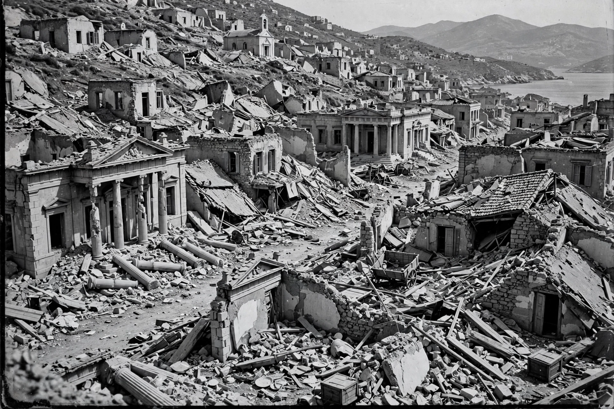

| 1953 Ionian earthquake | |
|---|---|
 | |
| Date | 12 August 1953 |
| Magnitude | ~7.2 (surface-wave) |
| Location | Ionian Islands, Greece (Kefalonia, Zakynthos, Ithaca) |
| Deaths | 455–800 |
The 1953 Ionian earthquake, also called the Great Kefalonia earthquake, struck the southern Ionian Islands in western Greece on 12 August 1953, the third and strongest of a sequence of major shocks that began on 9 August. It devastated the islands of Kefalonia and Zakynthos, raising much of Kefalonia by as much as 60 cm and leaving only a handful of buildings standing across both islands.
Zakynthos town was almost entirely destroyed, first by shaking and then by fires that burned for days; only a few structures, including the church of Saint Dionysios and the National Bank building, survived. On Ithaca and Kefalonia, towns such as Argostoli and Lixouri were leveled. Estimates of the death toll range from 455 to about 800, with thousands injured and tens of thousands left homeless.
Greek and allied navies — including Israeli warships, whose crews were among the first foreign rescuers — evacuated survivors and delivered aid. Reconstruction followed strict anti-seismic codes; the rebuilt towns of the Ionian Islands, with low reinforced-concrete buildings, date largely from this period. The disaster accelerated a wave of emigration from the islands to Australia, Canada, the United States, and mainland Greece.